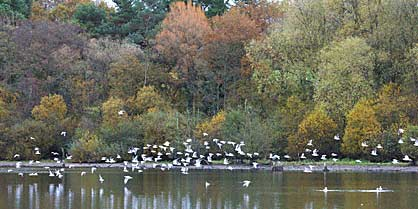

|  |  |
|
What to look for in November
A long staying Red-throated Diver was a feature of 2009, let's hope this is repeated. The number of Great Crested Grebes were expected to rise to around 50 by the end of the month, but less than 40 since 2021. One of the five records of Slavonian Grebe was in November.
A Cattle Egret was seen in 2009.
2 Brent Goose records were in November and two of the 5 records of Bewick's Swan as well as the only record of Whooper Swan. Goldeneye has been recorded in November in 17 different years, Goosander seen in 13 years is increasingly expected and Red-breasted Merganser has been seen once and Smew have been seen twice in this month. There are also two November records of Long-tailed Ducks.
Curlew, Dunlin, Redshank and Black-tailed Godwit have all been recorded in November and Snipe are likely.
Moorhen and Coot counts can rise to a peak at this time of year. Water Rail may appear now.
Mediterranean Gull is possible and a Kittiwake was an unusual visitor in 1997.
There have been recent roosts of Starlings and Pied Wagtails at dusk.
Two of the seven Dipper records were in November.
The one Black Redstart record was in November.
Cetti's Warbler was reported in 1996 and again in 2023 and 2024. Firecrest has been recorded in five different years.
Redpoll has been recorded three times. Siskins may appear now and be seen in small numbers throughout the winter.


Red-throated Diver : Dave Helliar